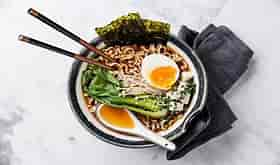

Ramen

Description
Ramen is a Japanese dish with a translation of "pulled noodles". It consists of Chinese-style wheat noodles served in a meat or (occasionally) fish-based broth, often flavored with soy sauce or miso, and uses toppings such as sliced pork (叉焼 chāshū), nori (dried seaweed), menma, and scallions. Nearly every region in Japan has its own variation of ramen, from the tonkotsu (pork bone broth) ramen of Kyushu to the miso ramen of Hokkaido.
Ingredients
- 2 tablespoons sesame oil
- 1 tablespoon minced fresh ginger root
- 1 tablespoon minced garlic
- 2 quarts chicken broth
- 2 tablespoons white miso paste
- 1 tablespoon soy sauce
- 1 tablespoon mirin (Japanese sweet wine)
- 1 (8 ounce) package dried Chinese-style noodles
- 1/2 pound cooked pork, cut into bite-size pieces
- 1/2 cup sliced green onions
- 1/2 cup sliced bamboo shoots
- 1/4 cup sliced red bell pepper
- 1/4 cup sliced yellow bell pepper
- 1/4 cup fresh bean sprouts
- 1/4 cup fresh corn kernels
- 1/4 cup fresh pea pods
- 1/4 cup sliced mushrooms
- 1/4 cup julienned carrots
- 1/4 cup chopped fresh cilantro
- 1/4 cup chopped fresh basil
- 1/4 cup chopped fresh mint
- 1/4 cup chopped fresh parsley
- 1/4 cup chopped fresh chives
- 1/4 cup chopped fresh green onions
Steps
- Heat sesame oil in a large pot over medium heat. Cook and stir ginger and garlic in hot oil until fragrant, about 1 minute. Pour chicken broth into pot and bring to a boil. Stir miso paste, soy sauce, and mirin into broth. Reduce heat to medium-low and simmer broth for 5 minutes.
- Bring a large pot of lightly salted water to a boil. Cook Chinese-style noodles in boiling water until tender yet firm to the bite, 4 to 5 minutes. Drain.
- Divide noodles between 4 large soup bowls. Ladle broth over noodles and top with pork, green onions, bamboo shoots, red bell pepper, yellow bell pepper, bean sprouts, corn, pea pods, mushrooms, carrots, cilantro, basil, mint, parsley, and chives.